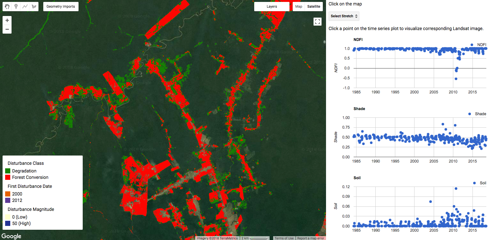

Example: Acre, Brazil¶
Example CODED output in Acre, Brazil.
In the Javascript repository there is an example the data that can be generated with CODED. The data can be visualized in the script ‘v0.2/2. Visualize Acre Outputs’ and the code to create the data can be found in ‘v0.2/examples/3. Create Acre Outputs’. 3. Create Acre Outputs
